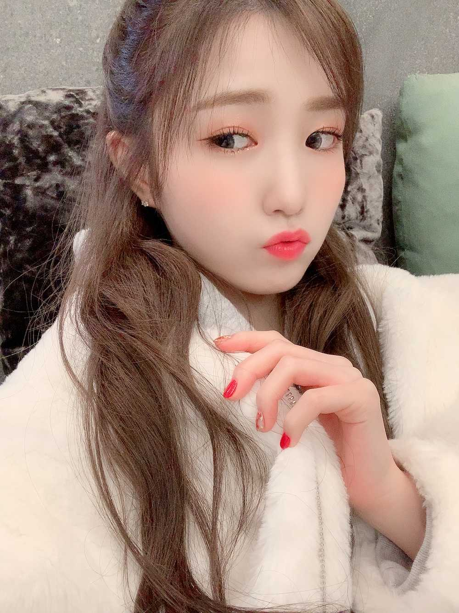
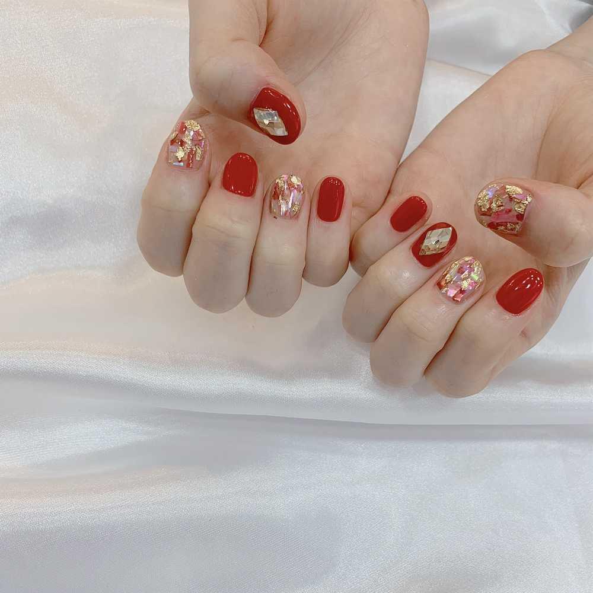

おはよう😃
ひいだよ🍓

カムバックショーも見ていただけましたか？？
私たちも練習中でしたが
ちょっとだけ中断して練習室のテレビで
みんなで見ましたよ🥰
いろいろなこと
答え合わせできたんじゃないかな？笑
まずネイル💅
赤色のキラキラ〜✨
初めてあんな派手な色やってみた😳
ちょっと派手すぎたかな〜って思って
今は少し落ち着いた色にしてみた😅
でも今になって赤もよかったな〜とか
思い始めてきた笑
あとで写真載せるね🤳
そして去年のメールで
「SO CURIOUS」の注目パートは
誰になったでしょう！的なこと言ったよね？
あそこは変わらずひいのパートでした🤗
9人バージョンになっても
変わらなくてよかったって
ちょっと安心した笑
「So Curious about you!」
いっぱい聴いてね〜🙋♀️✨
「spaceship」ではベレー帽をかぶりました！
帽子の衣装って今までなかった気がする🤔
すごく新鮮な気分でした😇
この曲では初めてラップにも初挑戦😳
とても可愛らしく愛らしい曲です😚
ダンスも可愛い😍
あとは今回のアルバムの曲ではないけど
「Hey.Bae.like.it」もしました🌻
モニターにひいが映ったとき
さくちゃんに「ひぃちゃん真面目な学生みたい」って言われた🤣🤣
たしかにちょっと自分でも思った笑
そしてタイトル曲「FIESTA」は
どうだったですか？？
ダンスも難しそうだったでしょ？
難しいです😊笑
あのチェック衣装とっても好き！！
また着れたらいいな👗💕
AYAYAYAもみんなカッコよかったな〜🥺
もっと書きたいことあるけど
長くなりすぎるのでこの辺で！！
あ！あと昨日のメールで
いろいろ間違えてしまった点が💦
🙅♀️「ひぃといずおん」
🙆♀️「WORLD GET YOU」
🙅♀️「栃木トヨタさん」
🙆♀️「NEZASホールディングスさん」でした！
大変失礼いたしました🙇♀️
ひぃといずおん懐かしいなあ🥺
またストラックアウトしたい笑
今日も一日頑張ろうねっ😇
컴백쇼 어땠어요??
우리도 연습시간이었는데 잠시 중단해서
다같이 연습실에서 봤어요🥺
다 너~무 예뻤더라~😭
감동했어요ㅎㅎㅎ
의상도 다 제 취향이었어요👗💕
저는 참여하지 않았지만 AYAYAYA때 채연언니가
진짜 멋있었어요ㅜㅜ
저도 언젠가 멋있는곡에 도전하고싶어요!!
안 어울린가...?ㅎㅎ
아 맞다!!
컴백쇼 때 귀를 뚫고나서 처음으로 귀거리를 했어요!!
근데 피에스타 무대 때만..ㅎㅎㅎㅎ
그때는 뚫고나서 아직 시간이 얼마나 안돼서
조금 아팠어요ㅎㅎㅎ
지금은 전혀 아프지 않아요 🙆♀️✨
이 내용은 이따가 일본어로도 쓸게용✍🏻💨

ネイル💅
예쁘죠???ㅎㅎㅎ
ばいばーい👋
ひいまる🥟
P.S. 本文長すぎて鳥肌たった…
書きすぎたごめん…😨